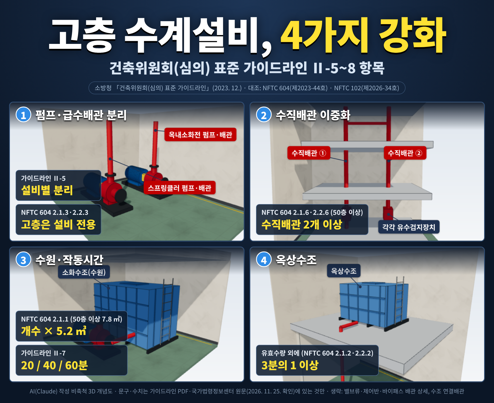
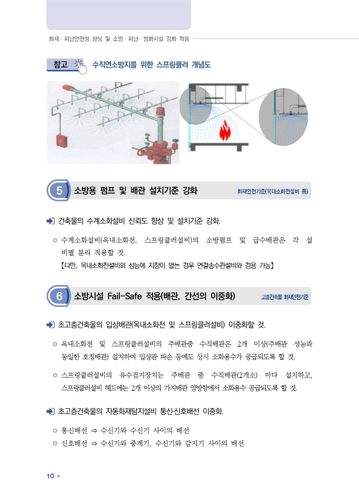
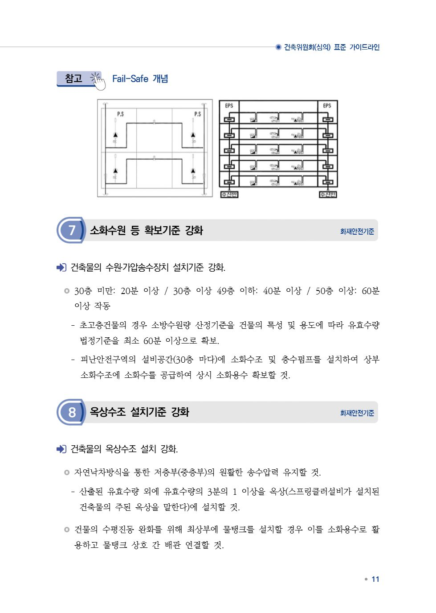
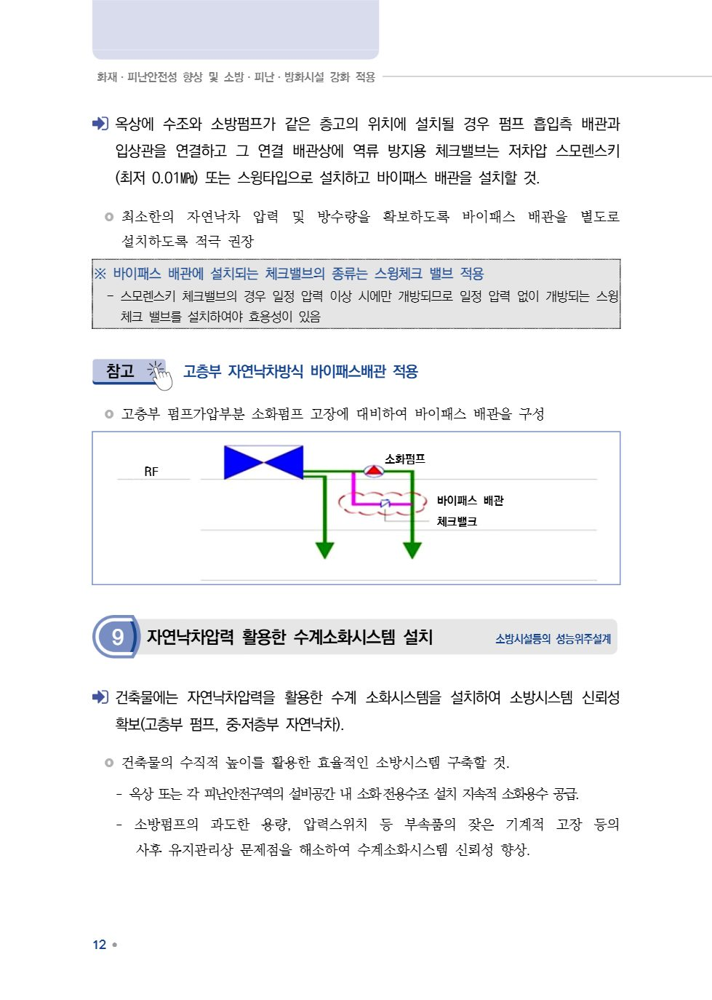
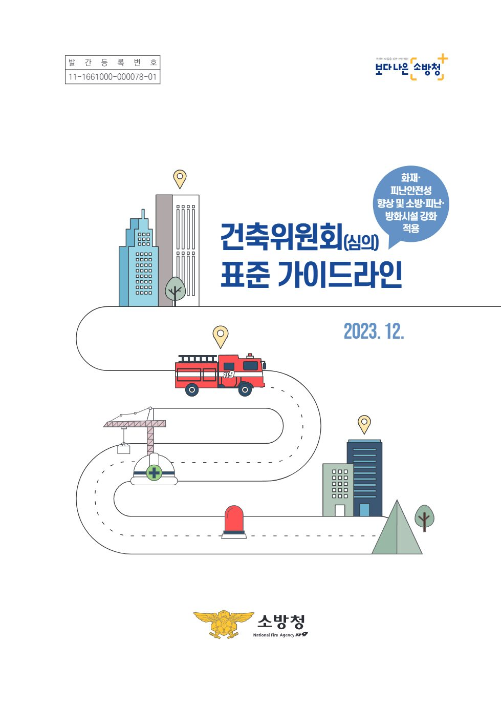
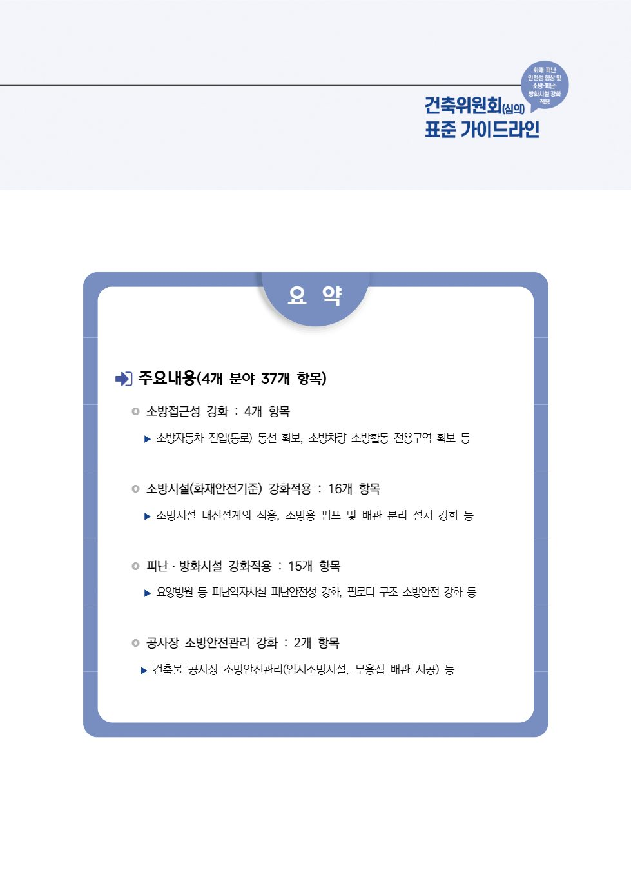

고층건축물 소방 펌프·배관, 건축심의는 무엇을 더 볼까요? — 「건축위원회(심의) 표준 가이드라인」 Ⅱ-5~8
왜? 고층 공동주택·업무시설은 건축위원회 심의에서 이 가이드라인 문구가 조건으로 붙는 경우가 많아, 설계 단계에서 어디까지가 기준이고 어디부터가 심의 권고인지 구분해 두려고 원문을 대조합니다.

1. 지침 요약
| 항목 | 내용 |
|---|---|
| 발신 | 소방청 누리집 법령자료실 게시(2024. 1. 8.) — 담당: 소방청 화재예방국 소방분석제도과 |
| 자료명 | 「건축위원회(심의) 표준 가이드라인」 — 표지 부제 "화재·피난안전성 향상 및 소방·피난·방화시설 강화 적용", 2023. 12., 43쪽(PDF) |
| 구성(원문 요약 쪽) | 4개 분야 37개 항목: 소방접근성 강화 4, 소방시설(화재안전기준) 강화적용 16, 피난·방화시설 강화적용 15, 공사장 소방안전관리 강화 2 |
| 이 글의 범위 | Ⅱ. 화재안전기준(소방시설) 강화 적용 중 수계소화설비 4개 항목 — 5. 소방용 펌프 및 배관 설치기준 강화, 6. 소방시설 Fail-Safe 적용, 7. 소화수원 등 확보기준 강화, 8. 옥상수조 설치기준 강화(원본 10~12쪽) |
| 문서번호 | 게시글·첨부 PDF에 시행 공문 문서번호는 없습니다(확인하지 못했다). 발간등록번호 11-1661000-000078-01. |
| 성격 | 건축위원회 심의 때 적용하는 표준 가이드라인입니다. PDF 본문에서 법적 효력에 관한 문구는 이번에 찾지 못했다(확인하지 못했다). |
2. 원문 보기
소방청 법령자료실 첨부 PDF의 원본 페이지입니다. 표지·요약 쪽과 이 글에서 다루는 10~12쪽을 그대로 이미지로 옮겼습니다(가공 없음, 이 쪽들에는 개인정보 없음). 쪽 번호는 책 쪽수입니다. 전체 원본은 아래 출처의 소방청 게시글에서 받을 수 있습니다.



원본 표지·요약 쪽 더 보기


· 원본 발췌 PDF 받기 (위 5쪽 이미지를 묶은 것)
3. 핵심 내용 — Ⅱ-5~8
| 항목(근거 표시) | 가이드라인 원문 요지 |
|---|---|
| 5. 펌프·배관 분리 (화재안전기준(옥내소화전설비 등)) | 수계소화설비(옥내소화전, 스프링클러설비)의 소방펌프 및 급수배관은 각 설비별 분리 적용. 다만, 옥내소화전설비의 성능에 지장이 없는 경우 연결송수관설비와 겸용 가능 |
| 6. Fail-Safe(이중화) (고층건축물 화재안전기준) | 초고층건축물의 입상배관(옥내소화전·스프링클러) 이중화: 주배관 중 수직배관 2개 이상(주배관 성능과 동일한 호칭배관), 유수검지장치는 수직배관(2개소)마다, 헤드에는 2개 이상의 가지배관 양방향에서 공급. 자동화재탐지설비 통신·신호배선 이중화(수신기↔수신기, 수신기↔중계기·감지기) |
| 7. 소화수원 (화재안전기준) | 30층 미만 20분 / 30층 이상 49층 이하 40분 / 50층 이상 60분 이상 작동. 초고층은 유효수량을 최소 60분 이상, 피난안전구역 설비공간(30층마다)에 소화수조·충수펌프를 두어 상부 소화수조에 상시 공급 |
| 8. 옥상수조 (화재안전기준) | 자연낙차로 저층부(중층부) 송수압력 유지. 유효수량 외에 3분의 1 이상을 옥상(주된 옥상)에. 진동 완화용 최상부 물탱크는 소화용수로 활용·상호 연결. 옥상에 수조와 펌프가 같은 층이면 흡입측 배관과 입상관을 연결하고 체크밸브는 저차압 스모렌스키(최저 0.01 ㎫) 또는 스윙타입 + 바이패스 배관. 바이패스 배관의 체크밸브는 스윙체크(스모렌스키는 일정 압력 이상에서만 개방되므로) |
4. 현행 법령·기준 반영 여부
대조일 2026. 11. 25., 국가법령정보센터 현행본 기준입니다. 가이드라인(2023. 12.)은 현행 NFTC 604(국립소방연구원공고 제2023-44호, 2023. 12. 20. 시행)와 같은 시기에 나왔고, 소방청 법령자료실 목록(2026. 11. 25. 확인, 최신 게시 2026. 8. 19.)에 이 가이드라인의 후속판 게시는 보이지 않습니다.
| 항목 | 현행 원문 | 대조 결과 |
|---|---|---|
| 펌프 분리 | NFTC 604 2.1.3·2.2.3: 펌프를 이용하는 가압송수장치는 옥내소화전설비(스프링클러설비) 전용으로 설치하고 예비펌프를 추가로 설치 NFTC 102 2.2.1.5: 펌프는 전용으로 할 것. 다만, 다른 소화설비와 겸용하는 경우 각각의 소화설비의 성능에 지장이 없을 때에는 그렇지 않다. | 고층건축물(NFTC 604 적용)은 기준과 같음. 그 밖의 건축물은 NFTC 102가 겸용을 허용하므로 가이드라인이 기준보다 강함(심의 조건) |
| 급수배관 분리 | NFTC 604 2.1.5: 급수배관은 전용. 다만, 옥내소화전설비의 성능에 지장이 없는 경우 연결송수관설비의 배관과 겸용 / 2.2.5: (스프링클러) 급수배관은 전용 NFTC 102 2.3.3: 급수배관은 전용. 다만, 기동장치 조작과 동시에 다른 설비 송수 차단 가능하거나 성능에 지장이 없는 경우 다른 설비와 겸용 | 가이드라인 단서(연결송수관 겸용)는 NFTC 604 2.1.5와 같은 취지 |
| 수직배관 이중화 | NFTC 604 2.1.6·2.2.6: 50층 이상 건축물의 주배관 중 수직배관 2개 이상(동일 호칭배관), 스프링클러는 각각의 수직배관에 유수검지장치 / 2.2.7: 50층 이상 헤드는 2개 이상 가지배관 양방향 공급 + 수리계산 | 같음. 가이드라인의 "초고층"은 기준에서 "50층 이상"으로 적혀 있음 |
| 배선 이중화 | NFTC 604 2.4.3: 50층 이상 — 수신기↔수신기 통신배선, 수신기↔중계기·감지기 신호배선 이중배선, 단선 시에도 고장표시·정상 작동 | 같음 |
| 수원 | NFTC 102 2.1.1: 설치개수(최대 2개) × 2.6 ㎥ NFTC 604 2.1.1: 설치개수(최대 5개) × 5.2 ㎥, 50층 이상 7.8 ㎥ / 2.2.1: 스프링클러 기준개수 × 3.2 ㎥, 50층 이상 4.8 ㎥ | (의견) 옥내소화전 130 L/min 기준으로 2.6·5.2·7.8 ㎥는 20·40·60분 분량이라 가이드라인의 20/40/60분과 맞음. 피난안전구역 중간 소화수조·충수펌프는 NFTC 604·102에서 찾지 못했다 |
| 비상전원·연료 | NFTC 604 2.1.4·2.1.7·2.2.9: 40분(50층 이상 60분) 이상 | 가이드라인 "작동 시간"과 같은 구간 |
| 옥상수조 | NFTC 604 2.1.2·2.2.2: 유효수량 외에 3분의 1 이상을 옥상(주된 옥상)에. 다만, NFTC 102(103) 2.1.2(2)·(3)에 해당하면 제외 NFTC 102 2.1.2: 3분의 1 이상, 예외 (1)~(7)(지하층만, 고가수조, 수원이 최상층 방수구보다 높음, 높이 10 m 이하, 예비펌프, 2.2.1.9 단서, 가압수조) | 3분의 1은 같음. 고층건축물은 예외가 (2)·(3)만 남는 점에 주의. 바이패스 배관·스윙체크밸브·진동 완화용 물탱크 활용은 NFTC 102·604에서 찾지 못했다(심의 권고) |
NFTC 103(스프링클러) 2.1.2 문구는 이번에 따로 열어 대조하지 않았다. 위 표의 스프링클러 옥상수조 예외는 NFTC 604 2.2.2가 인용한 범위만 적었습니다.
5. 현장 체크
| 단계 | 확인할 것 |
|---|---|
| 설계(심의 전) | 층수로 적용 기준 먼저 나누기: 고층건축물(NFTC 604) 여부, 50층 이상 여부. 50층 미만 고층이어도 심의 조건으로 이중화가 붙을 수 있는지 심의 의견서 확인 |
| 펌프실 계획 | 옥내소화전·스프링클러 펌프와 급수배관을 설비별로 분리했는지(고층은 기준, 일반 건축물은 심의 조건일 때). 연결송수관 겸용은 옥내소화전 성능에 지장 없음을 수리계산으로 |
| 수원·옥상수조 | 수원 = 설치개수 × 5.2(7.8) ㎥ 계산서, 옥상수조 3분의 1을 "유효수량 외에" 별도로 잡았는지. 고층건축물은 예비펌프만으로 옥상수조를 빼지 못함(NFTC 604는 102의 (2)·(3)만 인용) |
| 옥상 펌프 배치 | 수조·펌프가 옥상 같은 층이면 흡입측-입상관 연결부 체크밸브 종류(저차압 또는 스윙)와 바이패스 배관 반영 여부 — 심의 조건이면 도면에 표기 |
| 시공·감리 | 50층 이상: 수직배관 2개 동일 호칭, 각 수직배관 유수검지장치, 가지배관 양방향 공급, 자탐 통신·신호 이중배선 단선 시험 |
자주 묻는 것
가이드라인대로 안 하면 위반인가요?
이 글의 4개 항목 중 펌프 전용(고층), 수직배관 이중화(50층 이상), 수원량, 옥상수조 3분의 1은 NFTC 604·102 원문에 있는 기준입니다. 일반 건축물 펌프 분리, 바이패스·스윙체크 같은 부분은 기준에서 찾지 못했으므로(의견) 건축위원회 심의 조건으로 붙었을 때 이행 대상이 됩니다.
30층대 건물도 수직배관을 2개로 해야 하나요?
NFTC 604 2.1.6·2.2.6 원문은 "50층 이상인 건축물"입니다. 가이드라인 Ⅱ-6도 "초고층건축물"이라고 적었습니다. 그 아래 층수는 심의 의견에 따릅니다.
바이패스 배관 체크밸브를 스윙형으로 하라는 이유는?
원문(12쪽): 스모렌스키 체크밸브는 일정 압력 이상 시에만 개방되므로, 일정 압력 없이 개방되는 스윙 체크밸브를 설치해야 효용성이 있다는 설명입니다. 펌프 고장 때 자연낙차로 물을 보내는 경로라서입니다.
6. 출처
· 소방청 법령자료실 — 「건축위원회(심의) 표준 가이드라인」 알림(첨부 PDF)
· 국가법령정보센터: 고층건축물의 화재안전기술기준(NFTC 604, 국립소방연구원공고 제2023-44호), 옥내소화전설비의 화재안전기술기준(NFTC 102, 국립소방연구원공고 제2026-34호)
· 같이 보기: 옥내소화전 함·표시등 — NFTC 102 2.4